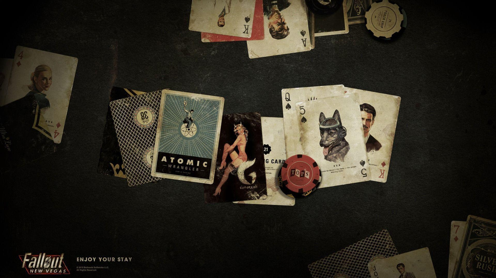
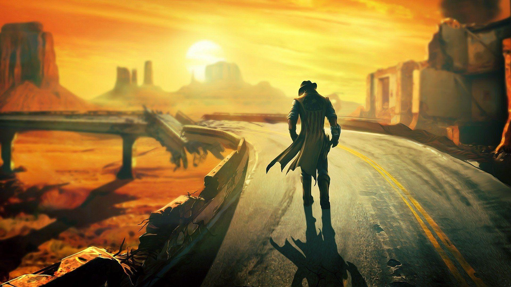
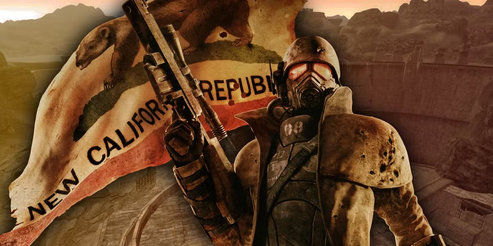
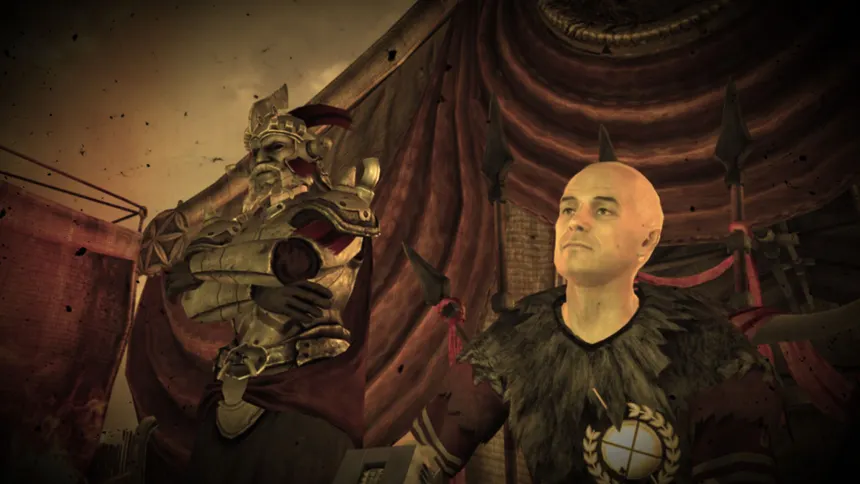
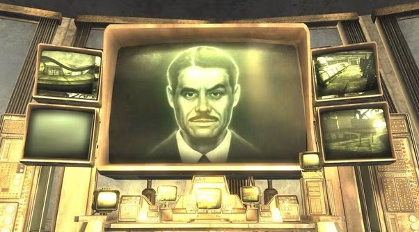
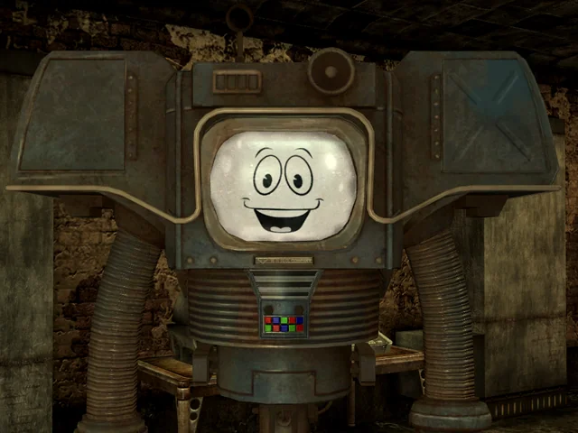

Vegas Baby!

Whether you choose to spend your time in the New Vegas strip, or scouring the wasteland you don't have to be alone! You can choose from 8 companions to explore the wastes with, assuming you can win their trust. Each one has different requirements, preferences, and quests to learn their stories. Some can even get you into trouble, so you'll need to choose carefully!
Oh the choices you'll make

Factions of the Mojave

New California Republic
Commonly referred to as the NCR, this faction is believed to be the largest governmental force since the Great war. The NCR seeks to spread democracy, personal liberty, and rule of law across the wasteland. They are featured in Fallout 2, Fallout New Vegas, and the Fallout TV show.

Caesar's Legion
Known as The Legion, this faction is based loosely on the Roman Empire with a much darker history. Caesars Legion roamed Arizona conquering and enslaving raider tribes before settling in Nevada. The Legion is actively at war with the NCR and seeking to control the entire Mojave.

Mr.House
The enigmatic ruler of New Vegas, Mr.House has been alive since before the Great war thanks to advanced medical technology. He played a pivotal role in protecting New Vegas during the war, and only wishes for it to remain safe and free of political turmoil.

Yes Man
Aaahhhh Yes Man, I'm sure you could guess what this "faction" is built for. That's right! Complete player freedom on all game altering decisions. You can be the ultimate goodie two shoes, the progenitor of destruction, or anything in between. Yes Man will smile and have your back all the way!